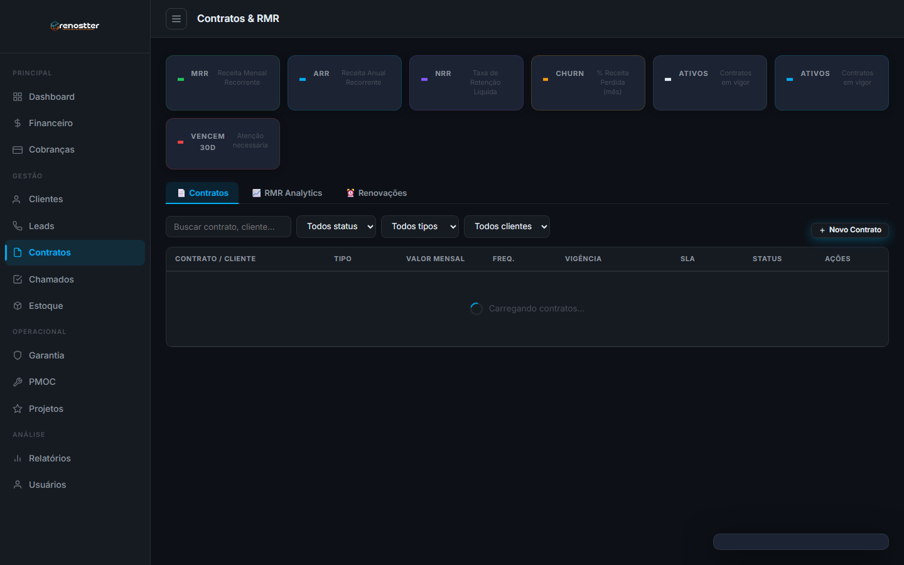
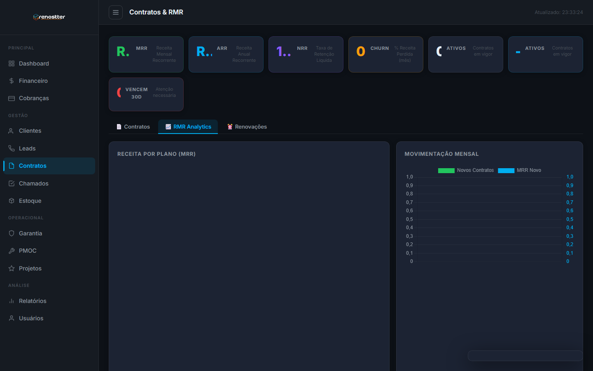

1Visão geral
O módulo de Contratos & RMR gerencia o coração financeiro da Renostter: contratos recorrentes com clientes (PMOC, manutenção preventiva, locação de equipamentos, planos de suporte) e as métricas de receita recorrente que determinam o valuation do negócio.
Por que existe
Contratos HVAC são tipicamente anuais com cobrança mensal (PMOC, manutenção) ou trimestral (garantias estendidas). Sem um sistema:
- Renovação depende de planilha + bom senso do gerente → churn involuntário
- Sem visibilidade de MRR/ARR/Churn → decisões de negócio no escuro
- Cobrança manual via boleto → inadimplência alta + custo operacional
- Cross-sell e upsell só na conversa do técnico
O módulo resolve com: gestão centralizada, alertas de vencimento, renovação automática, integração com gateway Cora para cobrança recorrente, e analytics de receita.
Quem usa
- Gerente comercial — fecha contratos, gerencia renovações, analisa churn
- Financeiro — acompanha MRR/ARR, inadimplência, fluxo de caixa recorrente
- Diretoria / Sócios — visualizam KPIs de saúde do negócio SaaS
- Operações — visualiza quais clientes estão ativos para alocar técnicos
2O que é RMR (Receita Mensal Recorrente)
RMR (Receita Mensal Recorrente) — em inglês MRR (Monthly Recurring Revenue) — é a métrica fundamental de qualquer negócio SaaS ou de assinatura. Representa a receita previsível que você recebe TODO MÊS.
Por que é importante
- Previsibilidade — permite planejar caixa, contratações, investimentos
- Valuation — empresas SaaS são avaliadas em múltiplos de ARR (5-10x)
- Saúde do negócio — MRR crescendo = saudável, MRR caindo = alerta vermelho
Métricas derivadas do MRR
| Métrica | O que é | Como calcular | Meta saudável |
|---|---|---|---|
| MRR | Receita Mensal Recorrente | Soma do valor mensal de todos contratos ativos | Crescer > 10%/mês |
| ARR | Receita Anual Recorrente | MRR × 12 | — |
| Churn Rate | % de clientes que cancelam no mês | Cancelados no mês / Ativos no início | < 5% |
| NRR | Net Revenue Retention | (MRR atual + expansão - churn) / MRR inicial | > 100% |
| Ticket Médio | Valor médio por contrato | MRR total / Nº contratos ativos | Crescer > 5%/ano |
| LTV | Lifetime Value | Ticket médio / Churn rate | > 3x CAC |
NRR (Net Revenue Retention) > 100% significa que o crescimento orgânico (expansão + upsell) compensa o churn. Empresas como Snowflake e Datadog têm NRR > 130%. A Renostter, sendo B2B com contratos anuais, pode aspirar NRR > 110%.
3Acesso rápido
Para abrir o módulo:
- Sidebar → menu Gestão → Contratos & RMR
- URL direta:
http://localhost:3000/crm/admin/contracts.html - BI Dashboard → cards de MRR/ARR/Churn (em
admin/bi.html)

4As 2 abas do módulo
| Aba | Função | Quando usar |
|---|---|---|
| 📄 Contratos | CRUD completo de contratos: criar, listar, editar, cancelar, renovar | Operação do dia-a-dia |
| 📈 RMR Analytics | KPIs de receita recorrente: MRR, ARR, NRR, Churn, Expansão, Vencendo | Reuniões de gestão, decisão estratégica |
4.1 Contratos (lista e CRUD)
A aba Contratos é onde o trabalho operacional acontece. Lista todos os contratos do sistema com busca, filtros e ações rápidas.
Status de um contrato
| Status | Significado | Ações |
|---|---|---|
| Ativo | Vigente, gerando receita | Editar, renovar, cancelar |
| Pendente | Assinado mas primeira cobrança ainda não processou | Aguardar compensação |
| Cancelado | Encerrado antes do prazo (churn) | Ver motivo, oferecer reativação |
| Renovado | Substituído por novo contrato (renovação) | Ver contrato novo |
| Suspenso | Cliente pediu pausa temporária | Reativar ou cancelar |
| Vencido | Passou do prazo final, não renovado | Tentar recuperar ou arquivar |
Como criar um contrato
- Na aba Contratos, clique + Novo Contrato
- Selecione o cliente (precisa estar cadastrado antes)
- Escolha o tipo de contrato (PMOC, Empresarial, Premium, etc.)
- Defina valor mensal, periodicidade de cobrança (mensal/trimestral/anual) e data de início
- Configure a renovação automática (recomendado)
- Adicione escopo (o que está incluso: nº de visitas, equipamentos cobertos, SLA)
- Salve — o sistema agenda a primeira cobrança via Cora
Quando você aprova uma cotação no módulo de Cotações, pode clicar em "Gerar Contrato" e o sistema cria o contrato já preenchido com base na cotação. Use sempre que possível para evitar retrabalho.
4.2 RMR Analytics
A aba RMR Analytics é o dashboard financeiro. Mostra a "saúde" do seu negócio recorrente.

KPIs exibidos
| KPI | Cor | O que é | Onde fica |
|---|---|---|---|
| MRR | verde | Soma do valor mensal de contratos ativos | Cabeçalho |
| ARR | azul | MRR × 12 (projeção anual) | Cabeçalho |
| Novos no mês | verde | Contratos criados no mês corrente | Cabeçalho |
| Churnados | vermelho | Cancelados no mês | Cabeçalho |
| NRR | roxo | Net Revenue Retention (ideal > 100%) | Cabeçalho |
| Ticket Médio | branco | Valor médio por contrato | Cabeçalho |
Tabela de Receita por Plano
Mostra a contribuição de cada tipo de contrato para o MRR total. Use para decidir onde focar vendas.
Lista de Vencendo em 60 dias
Tabela priorizada de contratos próximos do fim. Use para ação de retenção: ligue para o cliente, ofereça renovação antecipada com desconto.
5Tipos de contrato
A Renostter trabalha com 5 tipos de contrato recorrente, cada um com escopo e margem diferentes:
| Tipo | Escopo típico | Faixa de preço (R$/mês) | Margem |
|---|---|---|---|
| Básico | 1-2 equipamentos, manutenção semestral, sem atendimento de emergência | 150-400 | 40-50% |
| Empresarial | 3-10 equipamentos, manutenção trimestral, SLA 48h | 500-2.000 | 35-45% |
| Premium | 10+ equipamentos, manutenção mensal, SLA 24h, atendimento emergência 24/7 | 2.000-10.000 | 30-40% |
| PMOC | Obrigatório por lei (≥ 60k BTU), inclui relatório NBR 16020 | 300-1.500 | 50-60% (alta margem) |
| Emergencial | Plantão 24/7, sem manutenção preventiva incluída | 800-3.000 | 20-30% (baixa margem) |
6Métricas-chave (SaaS 101)
6.1 Churn Rate (Taxa de Cancelamento)
Percentual de clientes que cancelam num período. É a métrica mais perigosa — alto churn destrói valor.
Churn Rate (%) = (Clientes cancelados no mês / Clientes ativos no início) × 100Benchmark HVAC: 3-5%/mês é saudável. Acima de 8% é alerta vermelho.
6.2 NRR (Net Revenue Retention)
Retenção líquida de receita — mede se a expansão compensa o churn.
NRR (%) = (MRR atual + Expansão - Churn - Contração) / MRR inicial × 100Meta: > 100%. Acima de 110% é excelente (viabiliza growth sem novos clientes).
6.3 LTV (Lifetime Value)
Quanto um cliente gera de receita durante todo o relacionamento.
LTV (R$) = Ticket Médio / Churn Rate MensalEx: contrato de R$ 500/mês com churn 5% → LTV = R$ 10.000.
Para um negócio SaaS saudável, o LTV deve ser pelo menos 3x o CAC (custo de aquisição). Se LTV < 3× CAC, você está perdendo dinheiro em marketing. Se LTV > 5× CAC, pode investir mais agressivamente em vendas.
7Renovação & churn
Renovação automática (recomendada)
Contratos com renovação automática são prorrogados por mais 12 meses a partir do vencimento, sem ação manual. Requer:
- Forma de pagamento válida (cartão de crédito ou Pix Automático via Cora)
- Cliente sem inadimplência > 30 dias
Renovação manual
Quando renovação automática está desligada ou falhou, o sistema alerta 60 dias antes do vencimento. Ações:
- Aparece na aba RMR Analytics > Vencendo em 60 dias
- Gerente entra em contato com o cliente
- Se cliente aceita: clica Renovar, ajusta termos se preciso, salva
- Se cliente recusa: clica Cancelar, registra motivo (churn feedback)
Análise de churn
Para cada cancelamento, registre o motivo. Os mais comuns em HVAC:
| Motivo | % típico | Como evitar |
|---|---|---|
| Preço alto | 30-40% | Plano mais enxuto, desconto fidelidade |
| Mudou de fornecedor | 20-30% | Atendimento proativo, vínculo com técnico |
| Empresa fechou / mudou endereço | 10-20% | (inevitável) |
| Insatisfação com serviço | 10-20% | NPS/CSAT, ação corretiva rápida |
| Problemas financeiros do cliente | 5-10% | Plano flexível, pausa temporária |
8Workflow típico
Do lead à renovação:
- Lead qualificado (já passou pelo funil de Leads)
- Cotação gerada (módulo de Cotação, com cálculo técnico)
- Cotação aprovada pelo cliente (status: aprovada)
- Botão "Gerar Contrato" na cotação cria contrato pré-preenchido
- Contrato ativo — primeira cobrança agendada via Cora
- Execução mensal — manutenções PMOC + suporte + relatórios
- D-60 dias do vencimento — alerta de renovação
- Renovação automática ou manual — ciclo recomeça
9API reference (resumo)
GET /api/contratos
Lista contratos com filtros: status, tipo, clienteId, page, size.
POST /api/contratos
Cria novo contrato.
POST /api/contratos
{
"cliente_id": "<uuid>",
"tipo_contrato": "empresarial",
"valor_mensal": 850.00,
"data_inicio": "2026-07-21",
"duracao_meses": 12,
"renovacao_automatica": true,
"escopo": "Manutenção trimestral de 5 splits + SLA 48h"
}GET /api/contratos/:id
Detalhe completo de um contrato + histórico de cobranças.
PUT /api/contratos/:id
Atualiza dados (valor, escopo, data de vencimento, etc).
POST /api/contratos/:id/cancelar
Cancela o contrato (com motivo).
POST /api/contratos/:id/cancelar
{
"motivo": "preco_alto",
"observacoes": "Cliente fechou filial SP, mantém apenas RJ"
}POST /api/contratos/:id/renovar
Cria novo contrato vinculado (renovação).
GET /api/contratos/rmr
KPIs de receita recorrente (alimenta BI).
{
"mrr": 15750.00,
"arr": 189000.00,
"totalContratos": 23,
"contratosAtivos": 21,
"contratosCancelados": 2,
"vencemEm30Dias": 3,
"vencemEm60Dias": 5,
"churnedMes": 1,
"novoMes": 2,
"expansao": 0.05,
"nrr": 105.2,
"churnRate": 4.3
}GET /api/contratos/rmr/por-plano
Distribuição de receita por tipo de contrato (Básico, Empresarial, Premium, PMOC, Emergencial).
GET /api/contratos/rmr/historico
Evolução temporal do MRR (últimos 12 meses). Alimenta gráfico no BI.
GET /api/contratos/vencendo?dias=60
Lista contratos que vencem nos próximos N dias (default 60). Use para ação de retenção.
• README geral · Guia de Cotação · Guia de PMOC
• Arquitetura do ERP · Roadmap Postgres